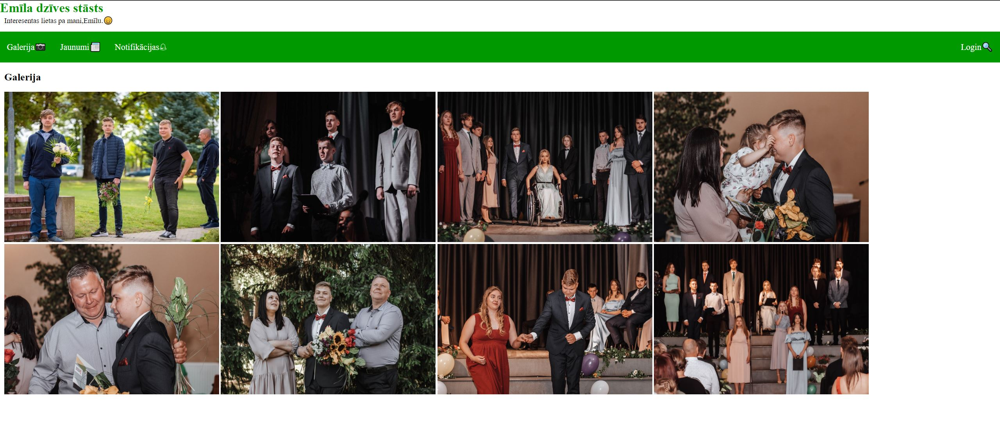
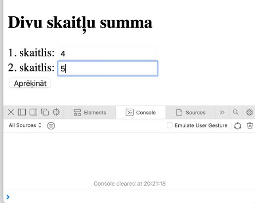

Par mani
Vārds, uzvārds
Mani sauc Emīls.
Par mani:
Man ir 16 gadi un es dzīvoju Stalbē, Latvijā. Es pašlaik mācos par programmētāju.
Izglītība
Es mācos Vidzemes Tehnoloģiju un Dizaina tehnikumā par programmētāju
Kursi un sertifikāti:
- Tādu pašlaik daudz nav, bet cerams ka būs vairāk.

Pieredze
Programmētājs
Vēl mācos pie Mārtiņa un Jēkaba.
- Cerams front-end nigger
- Mācos HTML, CSS, C++ un PHP.
Projekti
Pirmais projekts
Šo es taisīju stundā mācoties par grid.
Otrais projekts

Šo es taisīju pats mājās, jo gribēju apgūt ko jaunu.
Trešais projekts
